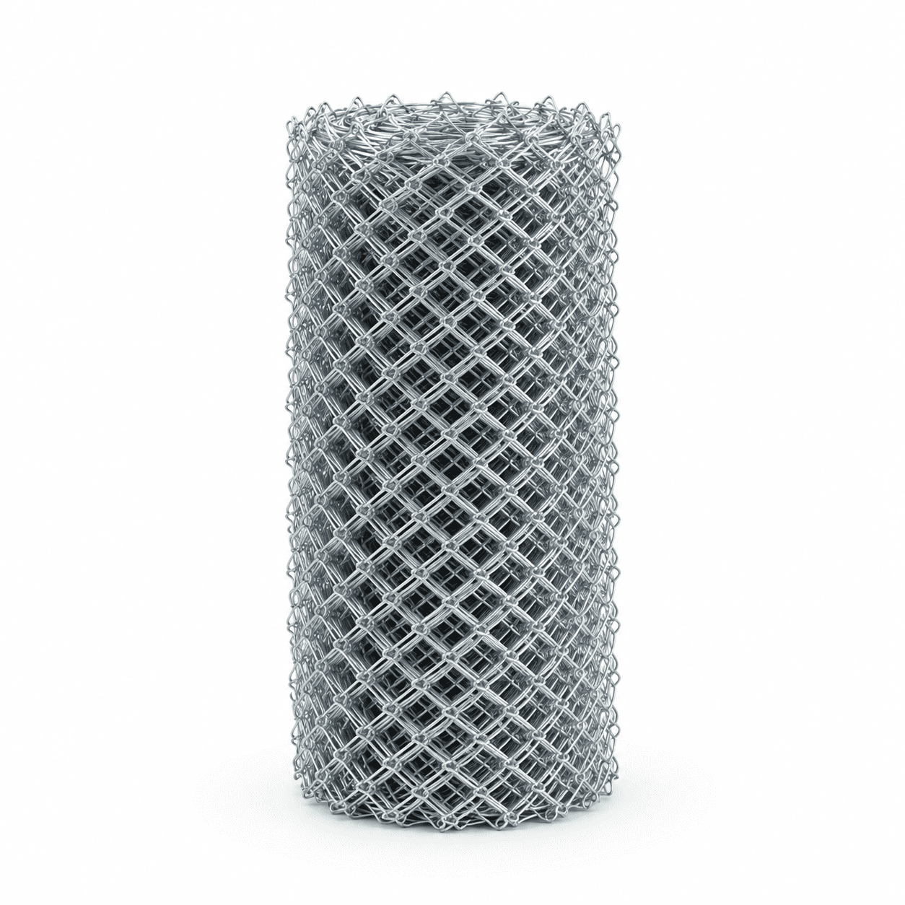
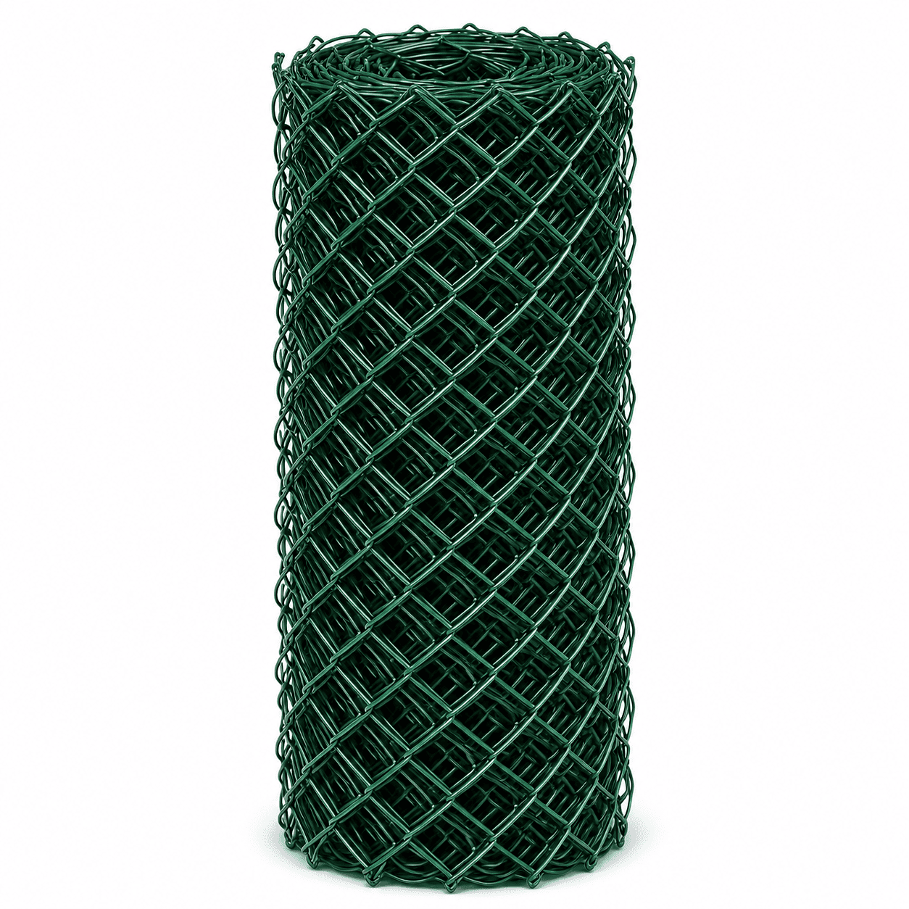
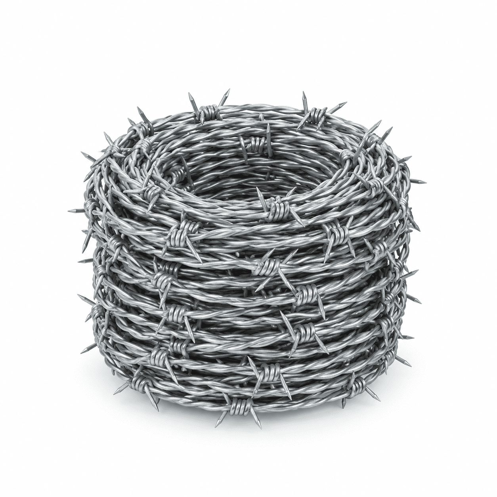

Naga Fencing · Manufactured
Chain link fencing in Madurai.
Hot-dip galvanized, PVC-coated and heavy-duty slatted chain link, woven to the aperture and gauge you specify and cut to the running length you need. This is our own manufactured range under the Naga Fencing brand, not stock bought in and resold.




Overview
Chain link is the default boundary material in South Tamil Nadu for one reason: it closes a long perimeter at the lowest cost per running foot while still letting you see through it. Where a compound wall costs by the square foot and takes weeks, a chain link run costs by the kilogram and goes up in days.
What actually varies between one quote and another is the gauge, the mesh opening and the zinc. Those three decide both the price and how long the fence lasts, and they are the three things a cheap quote quietly changes.
Key buying details
- Wire gauge
- 8, 10 and 12 SWG (4.06, 3.25 and 2.64 mm)
- Mesh aperture
- 1", 1½", 2", 2½" and 3" (25 – 75 mm)
- Finished height
- 3 ft to 8 ft
- Coatings
- Hot-dip galvanized, PVC coated (green), electro-galvanized
- Zinc coating
- Commercial to heavy grade, IS 4826
- Supplied as
- Rolls, cut to your running length
- Priced by
- Weight (kg), quoted in running feet at a given height
Where it is used
Typical applications.
- 01
Agricultural boundary. 10 SWG at 2" mesh is the standard choice and handles cattle pressure.
- 02
Industrial perimeter. 8 SWG with heavy zinc, usually with a three-strand barbed top.
- 03
Solar and infrastructure. 8 to 10 SWG against an approved drawing, with a post and gate schedule.
- 04
Compound and residential. PVC coated at 1½" to 2". The green disappears into planting.
- 05
Poultry and garden. 12 SWG at 1" is sufficient and costs materially less.
Buying guide
How to compare two chain link quotes.
Compare at the same gauge and the same aperture, or you are not comparing the same fence. A drop from 10 SWG to 12 SWG removes roughly a third of the steel from every foot, and because chain link is priced by weight, that is exactly where an unusually cheap rate comes from.
Then ask for the zinc coating in GSM. A 40 GSM commercial coating and a 275 GSM heavy coating are visually identical on the day they go up. Four years later, one of them is not.
Within about 20 km of the coast, around Ramanathapuram, Rameswaram and Thoothukudi, drop a grade from the inland expectation or move to PVC coated wire. Salt air is unforgiving to a thin galvanize.
Variants
Four ways chain link is specified.
All four are woven from the same stock. What changes is the coating and, for slatted, what is threaded through the mesh afterwards.
Standard
Hot-dip galvanized
Zinc bonded to the steel after weaving, so every cut end and knuckle is coated and there is no bare edge to start rusting. Roughly 15 to 25 years outdoors inland.Coated
PVC coated, green
Galvanized core sealed inside a PVC jacket. 20 to 30 years, and the usual choice near the coast and anywhere the fence should disappear into planting.Heavy duty
8 SWG industrial
The heaviest gauge we weave, at a heavy zinc grade. For factory perimeters, solar sites and anywhere the fence is a security measure rather than a marker.Privacy
Slatted chain link
Slats threaded vertically through the mesh for visual screening. Specify the mesh first; not every aperture takes a slat.Economy
Electro-galvanized
A thin, bright, even zinc layer. 5 to 8 years. Economical for indoor use, temporary site barricades and short-term work only.Pair with
Barbed wire topping
Three strands above the chain link where the boundary needs to deter rather than mark. Quoted on the same invoice. →Questions before an enquiry
Useful answers.
What is the minimum order for chain link fencing in Madurai?
There is no fixed minimum for collection from our Chitrakara Street godown, because we cut from the roll. For delivery to other districts a lorry load is typically 500 kg or more, because below that the freight per kilogram stops making sense for you.
Which gauge should I use for farm fencing?
10 SWG (3.25 mm) in a 2 inch mesh is the standard choice for agricultural boundary fencing. For a light garden or poultry boundary, 12 SWG is enough. For industrial perimeter or solar parks, use 8 SWG.
Is chain link sold by weight or by length?
It is priced by weight per kilogram but quoted in running feet at a given height, because that is how you buy it. The weight for a given length depends on the gauge and the aperture.
Do you supply the posts as well?
We supply fencing material including wire, mesh and fixings. Posts, concrete and erection are a separate scope and we will say so plainly rather than quote for work we do not perform.
How many posts and rolls will I need?
Posts are normally set at 10 foot centres, so the count is your perimeter divided by 10, plus one to close the run, plus struts at each corner and gate. The material estimator on the homepage works this out including the roll count.
Direct enquiry
Tell us the material. We will ask for the rest.
Product · dimensions · quantity · delivery location